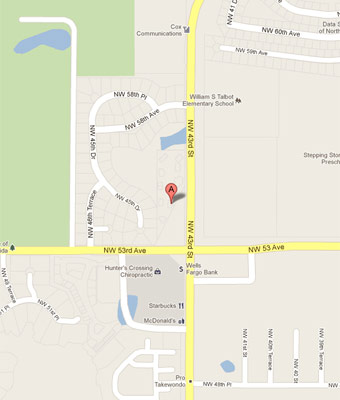

We specialize in information, interaction and visual design that responds to users across platforms and contexts. We typically work as an ongoing partner to help companies take ideas from concept through prototyping and all the way to market. We also work on short-term contracts specifically for prototyping digital products and improving existing products through dashboard, analytics and workflow design.
Objectives
Why does this thing exist? We work with you to articulate the objectives of your entire digital strategy. Objectives lead to conversion goals. Before moving onto conceptual planning, we need to have mutually agreed objectives and conversion metrics.
Macro-views
Wireframing isn't glamorous but it's perhaps the most important and overlooked step of digital creation. During the macro-views stage, we sketch the big blocks that relate to the objectives and conversion goals. Arrangement and flow between paper prototypes is modified to drive conversions and minimize distractions.
Sitemap
Once we have all of the design templates wireframed, we work through the website or application flow between the templates. The sitemap may not be a complete manifest of every page that will exist, but instead describes the relative arrangement of page types and how the user will navigate between them to drive conversion goals.
Micro-views
This is where the client starts to have fun. The micro-views stage is where we create the user interface, navigation and interactions within pages. This is an exciting but treacherous stage. While the project starts to become tangible in the client's eyes, the project scope is often threatened. We keep expectations in check and emphasize that design is driven by the conversion goals and not pure aesthetic.
Comps
Now we turn micro-view wireframes into photo-realistic composites of how the website or application will look. Information, interaction and aesthetic design work together to create a unique product that promotes your company's brand. Composites are built for all template types and for multiple device resolutions. We use the composites in usability testing to see how people will interact across devices.
Implementation
We are zealots for web standards and building extensible code that works everywhere. Your codebase will let you add/remove/change your website or application throughout its lifecycle to adapt to changing business objectives. Every project has different objectives and might need different tools for execution. We try to avoid choosing the tools until we understand the problems and plan the solution. We like HTML5/JavaScript solutions as well Python.
Tests
Success through failure. We test everything across a wide swath of web browsers, resolutions and mobile devices. It's impractical to have pixel-perfect consistency everywhere, so we are more focused on how the product falls apart. All user interactions should work and be intuitive whether it's with a mouse or on a touch screen. Ergonomics and contexts are considered. We'll throw long names, short titles, rapid clicking and all sorts of other oddities.
Launch
Everything is designed, coded, tested and edited. Now we turn it lose to the world. We also hook up tracking analytics and performance-monitoring tools to ensure your product performs as promised. During this final phase of creation, we work together to setup backup procedures and archive design files.
Recap: We Create
We start with objectives to derive conversion goals. We keep these goals in mind throughout wireframing views, composite creation and coding. Multiple rounds of user and device testing ensure your project will work across browsers and devices to drive conversions.
Every business has different goals and preferences. We believe a unified communication workflow between client and agency is critical to delivering on time and on budget.
Every business has different goals and preferences. We believe a unified communication workflow between client and agency is critical to delivering on time and on budget.
Proposal
Nobody enjoys the proposal stage, but we find it is critical for setting expectations and scope of work. The proposal defines how we will work together, what final products will be delivered and how payments shall be made. You can look at this website as the first step of the proposal. We specifically designed the structure and content to start us off on the right foot.
Communication
In-person meetings are great for setting goals and getting approval. Email is preferred for weekly check-ins. We require 2 days notice to schedule meetings.
Education
There is no way that we can fulfill all of your technical and content needs. Instead, we'd rather educate you and your team on how to manage your content and platforms. We write blog posts, host seminars and give one-on-one coaching as needed to help you meet your objectives and stay on budget.
Recap: We Collaborate
Every business has different goals and preferences. We believe a unified communication workflow between client and agency is critical to delivering on time and on budget.
Proposal: Clear requirements and procedures make everyone happy.
Communication: We live in Basecamp and love Skype for product demos.
Education: You should want to have control over you website and content strategy.
We'll work together to define goals and benchmarks. We track and analyze throughout implementation to give you actionable reports. You will have reliable data to help prioritize your business objectives.
We'll work together to define goals and benchmarks. We track and analyze throughout implementation to give you actionable reports. You will have reliable data to help prioritize your business objectives.
Definitions
It's impossible to reach goals without having common definitions regarding what you need and what we do. You want to be found through user search, but that doesn't mean you want to use traditional SEO-style services. Instead, we are zealous advocates for creating relevant content that your customers actually want instead of tricking them through keyword stuffing and link bait.
Analysis
We collect, clean and analyze data to better understand your business.
Priorities
After analyzing current projects and campaigns, we work together to set the next round of goals and metrics. The world is constantly changing, and you need to push your business to continually improve.
Recap: We Optimize
Web and mobile optimization is usually a balance between cost, time, scale and maintainability. We lean toward mid- to long-term strategic solutions. Short-term solutions should be reserved for prototyping as they often lead toward quick outmoding as your business grows and evolves.
Definitions: Create content instead of tricks; Performance is critical.
Analysis: Collect and analyze data to set useful goals and benchmarks with actionable outcomes.
Priorities: Focus on what is important to most of your customers instead of every outlying possibility.
Now you have an overview of our philosophies for creating, collaborating and optimizing. Let's be sure our perspectives are compatible before getting to work. Once we start, we want to build amazing things to help your business take off.
Now you have an overview of our philosophies for creating, collaborating and optimizing. Let's be sure our perspectives are compatible before getting to work. Once we start, we want to build amazing things to help your business take off.
I understand the importance of design, user testing and maintainability to project success.
I'm onboard for a collaborative relationship with commonly agreed communication frequency and methods.
I'm excited and ready to begin collecting data to better understand my business and set actionable goals.
If so, contact us
Meet the team
Dave Stanton, Managing Developer
I'm a communication technologist — applying engineering principles to understand and improve communication. I build publishing systems that work across platforms. My doctoral studies at the University of Florida explain how people read and process digital news.
Mike Davis, Front-end Developer/Designer
My passion is clean, simple user interfaces and the graphic design used to support their usability. In fact, the only thing I enjoy more than poring over pixels in my favorite image editor is bringing these interfaces to life with code. I use HTML5, CSS3 and JavaScript to build websites that emphasize content in usable and visually satisfying ways on any device.
Holly Marie Gibbs, Visual Designer
I create visual representations of concepts, ideas, thoughts and feelings. I believe that content and presentation play equal roles in communication and my goal is to make both as effective as possible (I can thank my degree in journalism and experience in publishing for that). I'm a little bit of a perfectionist, but clients never seem to mind.
Location

We're located at 5522 N.W. 43rd St. in Gainesville, Florida.